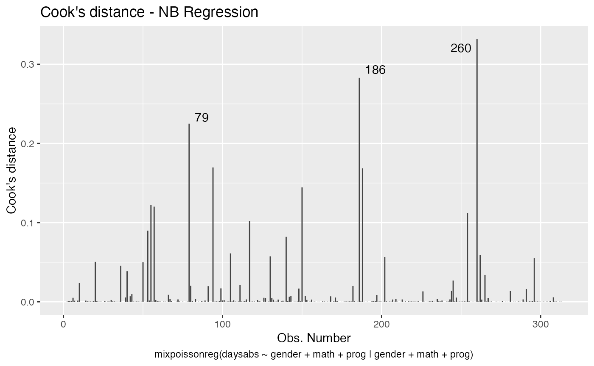
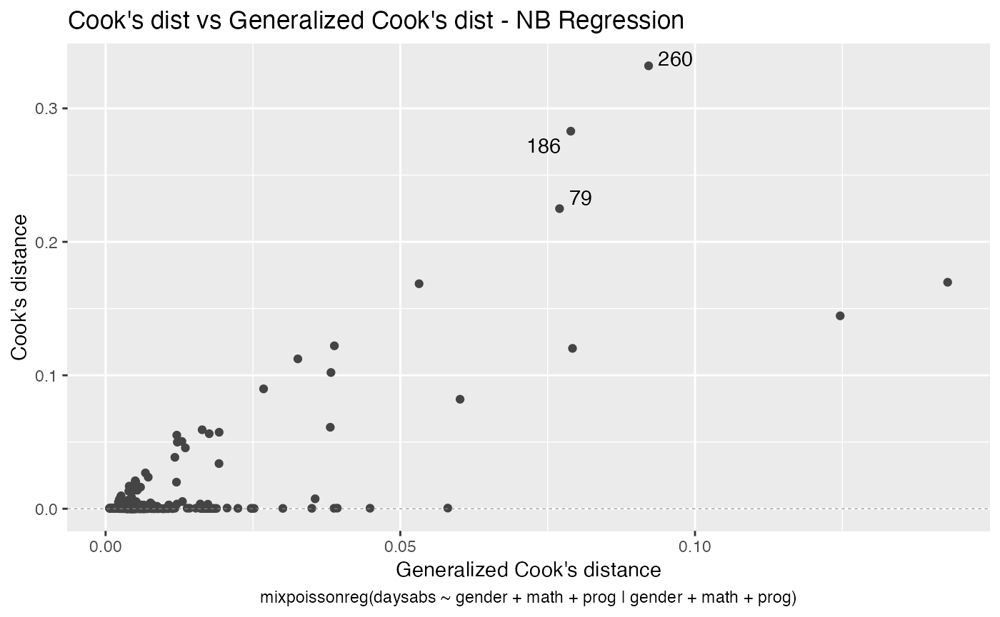
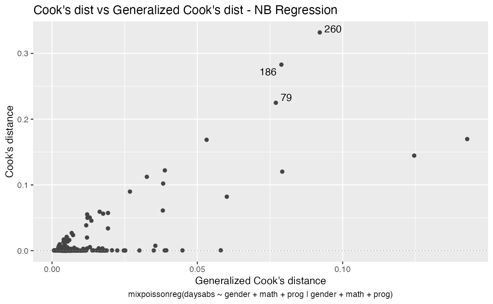
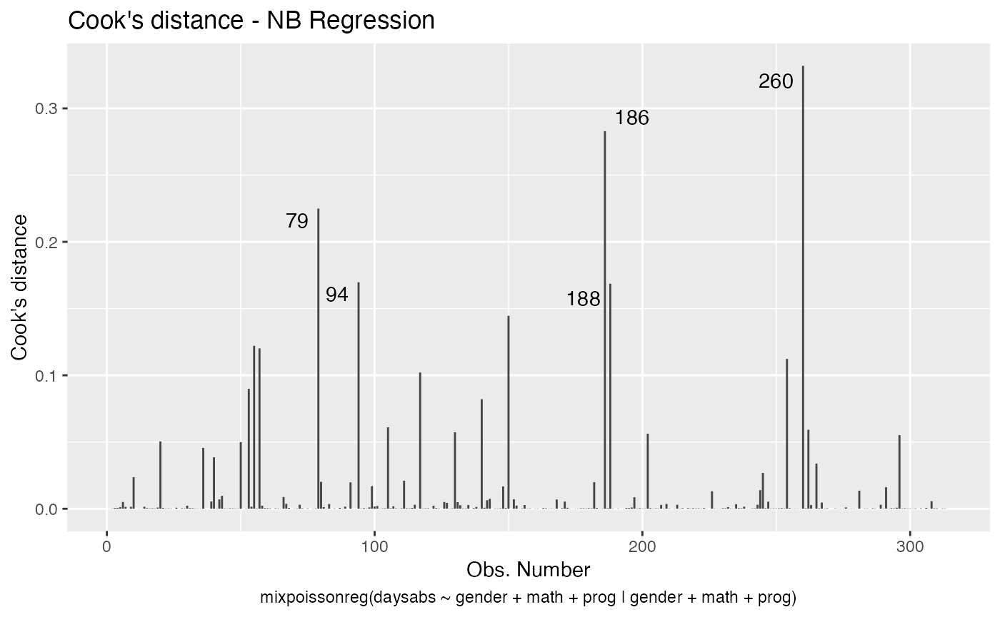
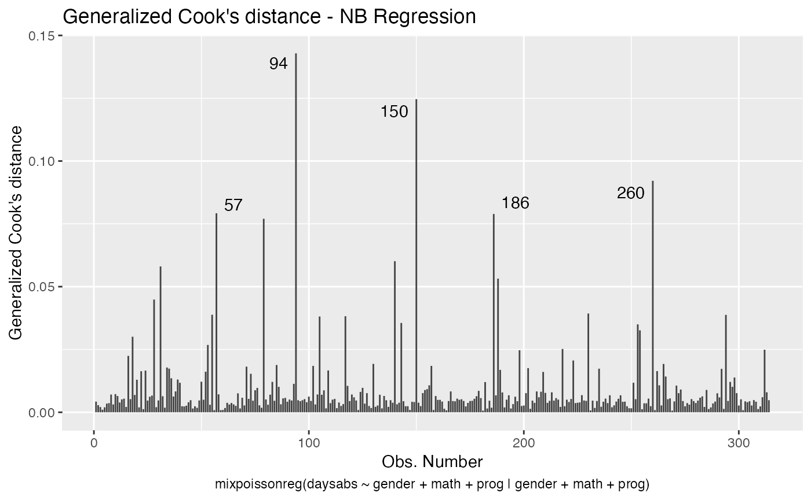
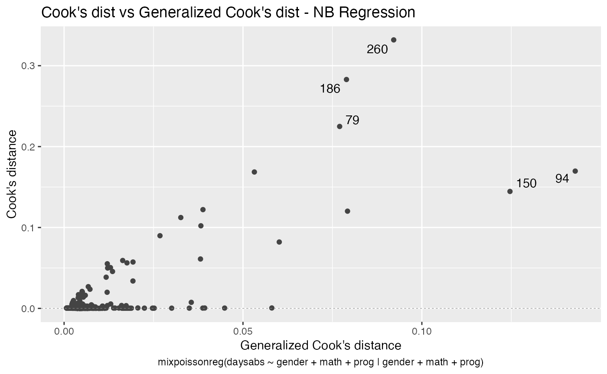
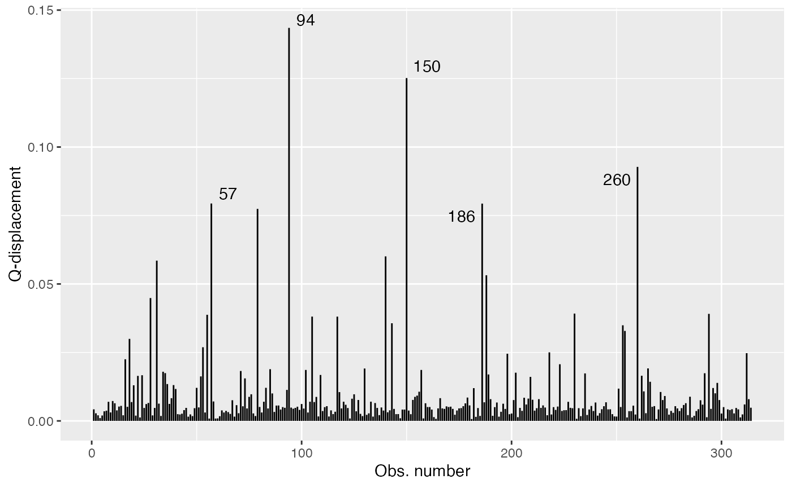

Global and local influence analysis with the mixpoissonreg package
Alexandre B. Simas
2020-12-31
Source:vignettes/influence-mixpoissonreg.Rmd
influence-mixpoissonreg.RmdGlobal Influence
In the mixpoissonreg package the following global influence methods are implemented: hatvalues, cooks.distance and influence. Below, we discuss the implementations of these methods in detail.
hatvalues method
To define “hat values” for mixed Poisson regression models, we follow Zhu et al. (2001) to consider the negative of the hessian of the Q-function as weight matrix, and follow Pregibon (1981) to define the “hat” matrix with respect to this weight matrix. We can consider the hessian of the Q-function with respect to mean-related parameters, which is the default. We can also consider the hessian of the Q-function with respect to the precision-related parameters to give rise to hat values related to the precision parameters.
To obtain the mean-related hat values one simply calls the hatvalues method:
library(mixpoissonreg)
fit <- mixpoissonreg(daysabs ~ gender + math + prog | gender + math + prog,
data = Attendance)
head(hatvalues(fit))
#> 1 2 3 4 5 6
#> 0.009079739 0.006988288 0.004624419 0.006642724 0.009645108 0.026264888The hat values are used to obtain Cook’s distance. One can also use the hat values to define leverage-adjusted residuals by dividing the residuals by sqrt(hatvalues(fitted_object)).
To obtain precision-related hat values one must set parameters to “precision”:
cooks.distance method
The implementation of the cooks.distance method for mixpoissonreg models contains several “Cook’s distance”-like measures. More precisely, it contains the standard Cook’s distance, the generalized Cook’s distance, the likelihood displacement and the Q-displacement.
Cook’s distance
The implementation of the standard Cook’s distance uses the usual formula for Cook’s distance in terms of the “hat” matrix, where the “hat” matrix is the one given above. The standard Cook’s distance returned by default in the cooks.distance method. So, to obtain Cook’s distance, we simply call the cooks.distance method:
head(cooks.distance(fit))
#> 1 2 3 4 5 6
#> 7.412875e-05 1.938615e-04 6.180147e-04 6.839705e-04 1.170998e-03 5.061612e-03Since there is also a “hat” matrix with respect to the precision parameters, we may compute Cook’s distance using the hat values with respect to the precision parameters. To compute Cook’s distance with the “hat” matrix with respect to the precision parameters we simply set the hat argument to “precision”:
head(cooks.distance(fit, hat = "precision"))
#> 1 2 3 4 5 6
#> 0.0000267023 0.0001141196 0.0021835715 0.0013027589 0.0025212380 0.0013807438generalized Cook’s distance and Q-displacement
The Generalized Cook’s distance and Q-displacement (also called Q-distance) for EM-based models were defined in Zhu et al. (2001) and computed for mixed Poisson regression models in Barreto-Souza and Simas (2016). We implemented first-order approximation to these quantities to make it computationally feasible. These first-order approximations are available in Barreto-Souza and Simas (2016). We also provide versions of generalized Cook’s distance for mean-related or precision-related parameters, whose details can be found in Barreto-Souza and Simas (2016).
To compute the generalized Cook’s distance with respect to the mean and precision parameters jointly, simply set the type argument to “GCD”:
head(cooks.distance(fit, type = "GCD"))
#> 1 2 3 4 5 6
#> 0.004246910 0.002821262 0.002072318 0.001018639 0.001979334 0.003445146To compute the generalized Cook’s distance with respect to the mean-related parameters, set the type argument to “GCDmean”:
head(cooks.distance(fit, type = "GCDmean"))
#> 1 2 3 4 5 6
#> 6.176761e-05 1.885887e-04 1.180572e-03 1.009911e-03 1.806187e-03 1.660795e-03and to compute the generalized Cook’s distance with respect to the precision-related parameters, set the type argument to “GCDprecision”:
head(cooks.distance(fit, type = "GCDprecision"))
#> 1 2 3 4 5 6
#> 4.185142e-03 2.632673e-03 8.917459e-04 8.727751e-06 1.731469e-04 1.784352e-03To compute the Q-displacement one sets the type argument to “QD”:
head(cooks.distance(fit, type = "QD"))
#> 1 2 3 4 5 6
#> 0.004222877 0.002776973 0.002041359 0.001022342 0.001969761 0.003506476Likelihood displacement
The likelihood displacement (also called likelihood distance) was defined in Cook and Weisberg (1982). To compute this measure, one simply set the type argument to “LD”:
head(cooks.distance(fit, type = "LD"))
#> 1 2 3 4 5 6
#> 0.0019138351 0.0013800327 0.0006547844 0.0001521722 0.0003604836 0.0012531224
influence method
The influence method returns a list with several quantities:
- hat.mean hat values with respect to the mean;
- hat.precision hat with respect to the precision parameters;
- pear.res Pearson residuals;
- score.res Score residuals
and if the argument do.coef is TRUE the returned list also contains:
- coefficients.mean first-order approximation to the impact on the estimate of each mean-related parameter if each observation is removed;
- coefficients.precision first-order approximation to the impact on the estimate of each precision-related parameter if each observation is removed.
For the two elements above, the ith row corresponds to the parameter estimates with the ith observation removed.
The influence method has only one argument, do.coef, which, by default, is set to TRUE since its computation is not computationally intensive.
Let us call this method on the fit object:
influence_fit <- influence(fit)
head(influence_fit$coefficients.mean)
#> (Intercept) gendermale math progAcademic progVocational
#> 1 2.745886631 -1.269649740 -0.426834669 -0.006599528 -0.245424207
#> 2 -0.244893977 2.746348319 -1.269386963 -0.425421206 -0.006613588
#> 3 -0.006613246 -0.245462581 2.751482711 -1.270173978 -0.425953726
#> 4 -0.425848228 -0.006619664 -0.246447333 2.746481615 -1.270762217
#> 5 -1.269850559 -0.426202055 -0.006650788 -0.245225919 2.746880872
#> 6 2.746076794 -1.269674897 -0.429480315 -0.006616788 -0.246166667Global influence plots
The main global influence plots are implemented in the plot and autoplot methods. They are the plots number 3, 4 and 5, which are, respectively, the Cook’s distance plot, the generalized Cook’s distance plot and Cook’s distance vs generalized Cook’s distance. The plot and autoplot methods provide the same plots, the difference between them being that the former uses R’s base graphics whereas the latter uses the ggplot2 package.
Let us build these plots:


and
 

These plots identify the most extreme points. By the default they identify 3 points, but the number of identified points can be changed by setting the id.n argument to the desired value for the plot method and by setting the label.n argument to the desired value for the autoplot method:

and

For further details customizing plots of mixpoissonreg objects, we refer the reader to the Diagnostic plots with the mixpoissonreg package vignette.
We now turn to the problem of plotting Q-displacements and likelihood displacements. Both of these plots can easily be built “by hand”.
R’s base graphics:
qd_fit <- cooks.distance(fit, type = "QD")
# Get the extreme points:
extreme_points <- as.vector(Rfast::nth(abs(qd_fit), k = 5,
num.of.nths = 5,
index.return = TRUE, descending = TRUE))
idx_y <- qd_fit[extreme_points]
ylim <- range(qd_fit, na.rm = TRUE)
ylim <- extendrange(r = ylim, f = 0.15)
plot(qd_fit, xlab = "Obs. number", ylab = "Q-displacement", ylim = ylim, type = "h")
text(extreme_points, idx_y, labels = extreme_points, pos = 3, offset = 0.2)
and
ld_fit <- cooks.distance(fit, type = "LD")
# Get 5 most extreme points:
extreme_points <- as.vector(Rfast::nth(abs(ld_fit), k = 5,
num.of.nths = 5,
index.return = TRUE, descending = TRUE))
idx_y <- ld_fit[extreme_points]
ylim <- range(ld_fit, na.rm = TRUE)
ylim <- extendrange(r = ylim, f = 0.15)
plot(ld_fit, xlab = "Obs. number", ylab = "Likelihood displacement", ylim = ylim, type = "h")
text(extreme_points, idx_y, labels = extreme_points, pos = 3, offset = 0.2)Now the ggplot2 version:
library(dplyr)
library(ggplot2)
library(ggrepel)
qd_fit <- cooks.distance(fit, type = "QD")
qd_tbl <- tibble("Q-displacement" = qd_fit, "Obs. number" = 1:length(qd_fit))
# Get 5 most extreme points
qd.extreme <- arrange(qd_tbl, desc(`Q-displacement`))
qd.extreme <- head(qd.extreme, 5)
ggplot(qd_tbl, aes(x = `Obs. number`, y = `Q-displacement`)) +
geom_linerange(aes(ymin = 0, ymax = `Q-displacement`)) +
geom_text_repel(data = qd.extreme, aes(label = `Obs. number`))
and
ld_fit <- cooks.distance(fit, type = "LD")
ld_tbl <- tibble("Likelihood displacement" = ld_fit, "Obs. number" = 1:length(ld_fit))
# Get 5 most extreme points
ld.extreme <- arrange(ld_tbl, desc(`Likelihood displacement`))
ld.extreme <- head(ld.extreme, 5)
ggplot(ld_tbl, aes(x = `Obs. number`, y = `Likelihood displacement`)) +
geom_linerange(aes(ymin = 0, ymax = `Likelihood displacement`)) +
geom_text_repel(data = ld.extreme, aes(label = `Obs. number`))